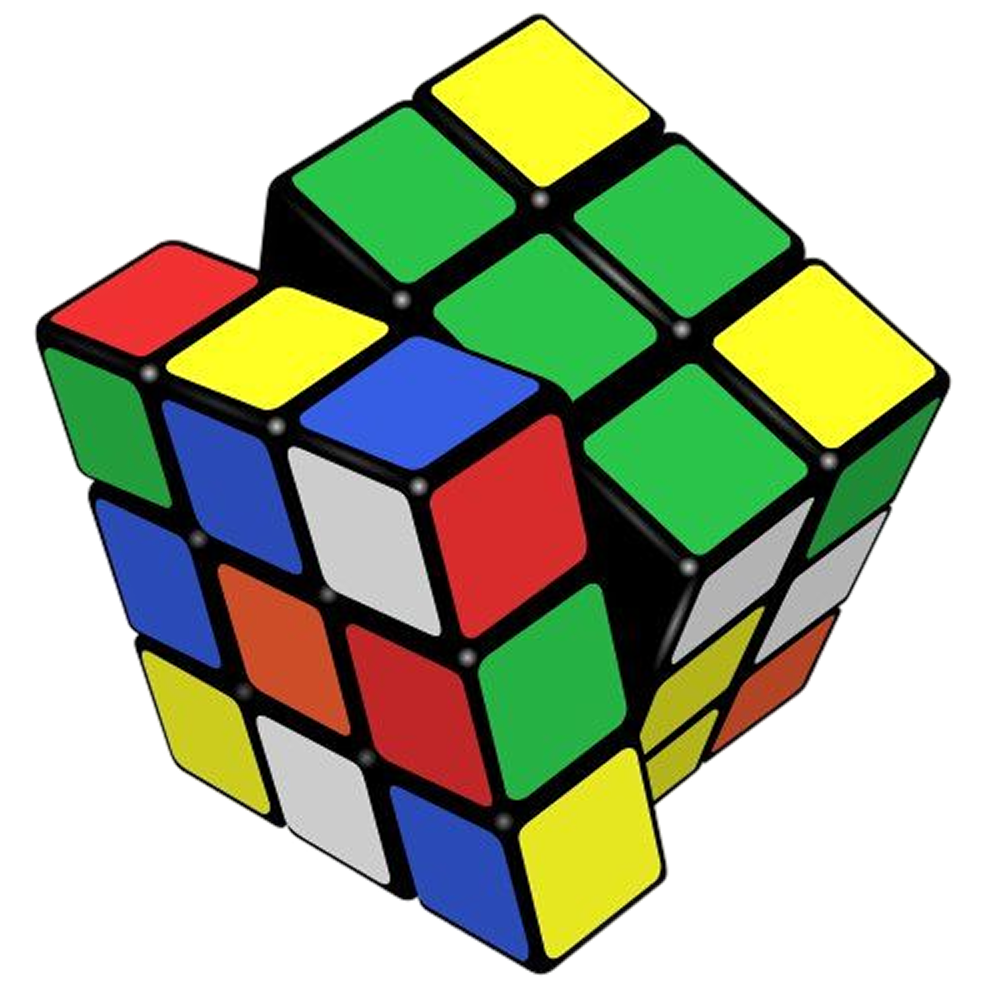
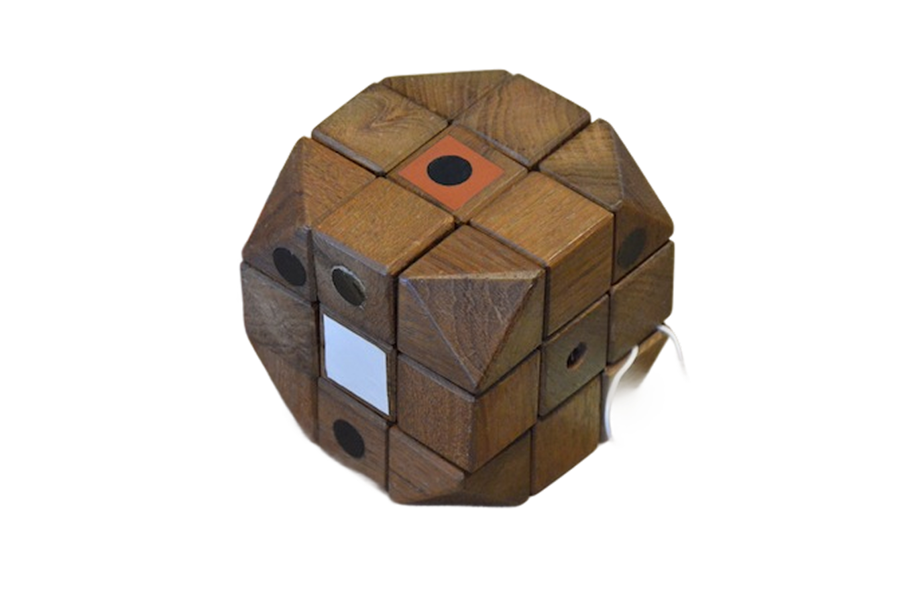
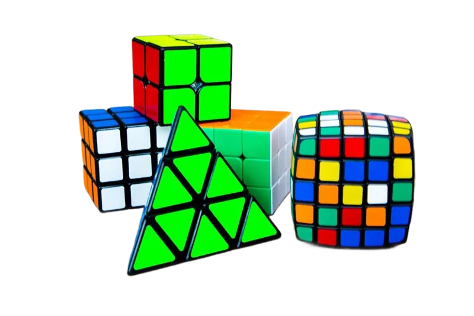

1945-1980 - L'ESPLOSIONE DELLA PLASTICA
CUBO DI RUBIK
Se c’è un oggetto che incarna la frustrazione, il genio e il fascino della logica, è il cubo colorato inventato nel 1974 dall'architetto ungherese Ernő Rubik. Nato come uno strumento didattico per aiutare i suoi studenti a comprendere la geometria tridimensionale, il "Cubo Magico" è diventato il giocattolo più venduto della storia.
UN PROGETTO IMPOSSIBILE
Ernő Rubik non voleva creare un giocattolo. Stava cercando un modo per far ruotare dei blocchi indipendentemente senza che l'intera struttura cadesse a pezzi.
- Primo prototipo: Era fatto di legno, con gli angoli smussati e tenuto insieme da elastici.
- La scoperta del gioco: Una volta mescolati i colori, lo stesso Rubik impiegò un intero mese per riportare il cubo alla sua posizione originale. Fu allora che capì di aver creato un rompicapo senza precedenti.



IL BOOM DEGLI ANNI '80
Sebbene inventato nel '74, il cubo arrivò sul mercato internazionale nel 1980 grazie alla Ideal Toy Corp. Fu un successo istantaneo e travolgente:
- Matematica: Con 43.252.003.274.489.856.000 (oltre 43 quintillioni) di combinazioni possibili, ma una sola soluzione, il cubo rappresentava una sfida irresistibile per chiunque.
- Icona Pop: Apparve in film, serie TV e opere d'arte, diventando il simbolo degli anni '80, dei nerd e dell'intelligenza superiore.
- Speedcubing: Nacquero subito le prime competizioni per risolverlo nel minor tempo possibile, una pratica che continua ancora oggi con record mondiali che scendono sotto i 4 secondi.

OLTRE IL SEMPLICE ROMPICAPO
Il Cubo di Rubik ha insegnato a generazioni di bambini (e adulti) la resilienza. Risolverlo richiedeva pazienza, studio di algoritmi e visione spaziale. Ha dimostrato che un oggetto apparentemente semplice poteva nascondere una complessità infinita, diventando un simbolo di design industriale perfetto.
